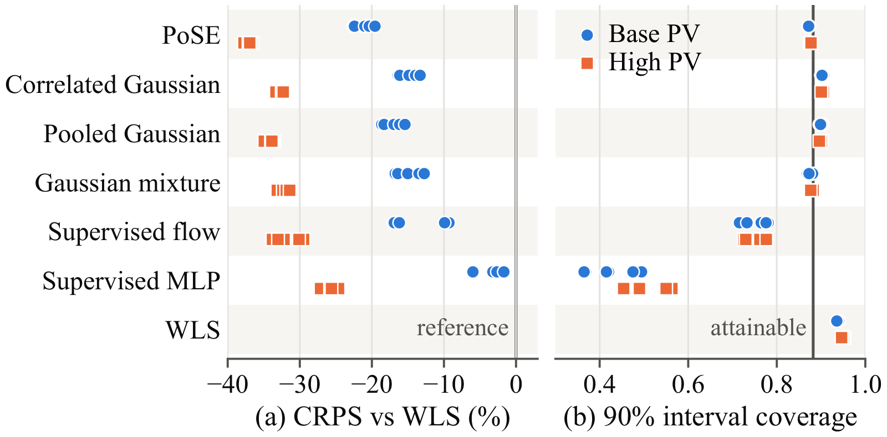
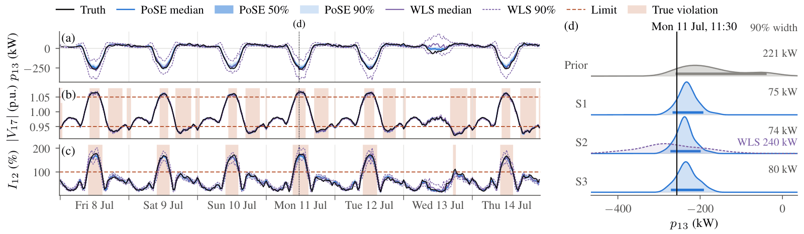

Add measurements, watch the posterior tighten
IEEE 33-bus feeder. Each cloud is one secondary substation; each dot is one sample.
How it works
Learn the prior once; bring in the physics and the meters at sampling
DSSE on a medium-voltage feeder is underdetermined: with few real-time measurements, pseudo-measurements of the secondary substations carry most of the information. In Bayesian terms they are the prior, and an unobservable feeder is an ill-posed inverse problem. PoSE keeps the two factors of the posterior p(s | y, c) ∝ p(y | s) p(s | c) apart.
Learn the prior
A conditional flow matching model learns p(s | c), the joint distribution of the substation injections given month, time of day and day type. It is trained once on historical data and contains no sensor or noise information.
Sample
Starting from Gaussian noise, an Euler sampler integrates the flow in 200 steps. At every step the network gives an endpoint estimate ẑ of the standardized injections.
Correct with measurements and power flow
A Kalman-type update pulls the endpoint estimate towards the measurements at every step. The residual uses the AC power flow h; the gain uses the LinDistFlow matrix, the Tweedie covariance of the endpoint and the measurement noise plus the linearization error.
The correction is exact for a Gaussian prior and linear measurements, and its cost is set by the sensors rather than the grid size: PoSE-fast forms the endpoint covariance only along the measured directions. Each posterior sample is passed through the AC power flow, so every sampled voltage and branch current satisfies the power flow equations, and the probability that a voltage or thermal limit is violated is read directly from the samples.
One prior, any meters
The same weights serve any measurement set, noise level and topology
Reconfiguration changes the feeder model but not the substation injections, so the learned prior carries over unchanged. Only the power flow model and its linearization are rebuilt.
Estimators trained on measurement–state pairs
The network learns the power flow and one measurement set. A new meter set, noise level or topology means a new model.
52–59 s to retrain a supervised estimator for one topology on one H100.
PoSE
The measurement set, its noise and the feeder model enter only through the correction. The prior is never retrained.
0.4–1.8 s to rebuild h, H and Σlin for a new topology.
Results
Most accurate on two feeders, calibrated on the 33-bus feeder
IEEE 33-bus feeder with three years of measured household load and rooftop PV data: three measurement sets, two noise levels and two PV penetrations, 1,000 test snapshots each. The unbalanced three-phase 240-bus Iowa feeder has 455 node-phases and a 386-dimensional injection state.


Injection CRPS (kW) and coverage of 90% intervals, S2 at nominal noise, IEEE 33-bus feeder.
| Method | CRPS, base PV | Coverage | CRPS, high PV | Coverage |
|---|---|---|---|---|
| WLS | 8.27 | 0.941 | 11.56 | 0.952 |
| Correlated Gaussian | 6.94 | 0.906 | 7.87 | 0.904 |
| Pooled Gaussian | 6.76 | 0.902 | 7.68 | 0.900 |
| Gaussian mixture | 6.91 | 0.879 | 7.89 | 0.881 |
| Supervised MLP | 7.78 | 0.415 | 8.61 | 0.490 |
| Supervised flow | 6.87 | 0.765 | 7.84 | 0.762 |
| PoSE (ours) | 6.42 | 0.874 | 7.33 | 0.876 |
Video
PoSE in about two minutes
Citation
BibTeX
@unpublished{lin_pose,
author = {Lin, Nan and Palensky, Peter and Vergara, Pedro P.},
title = {Bayesian Distribution System State
Estimation with Flow Matching},
note = {Manuscript submitted for publication},
year = {2026}
}